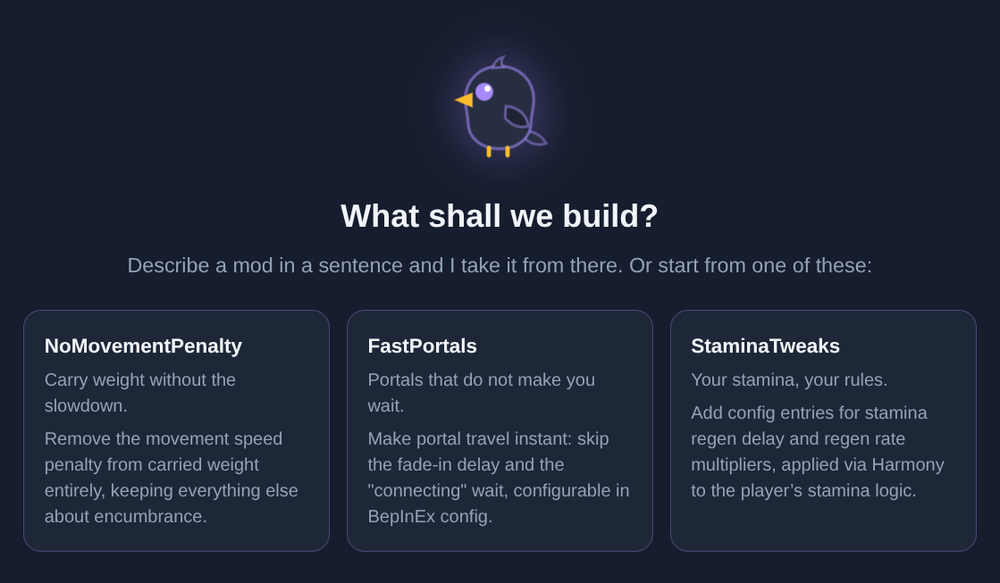
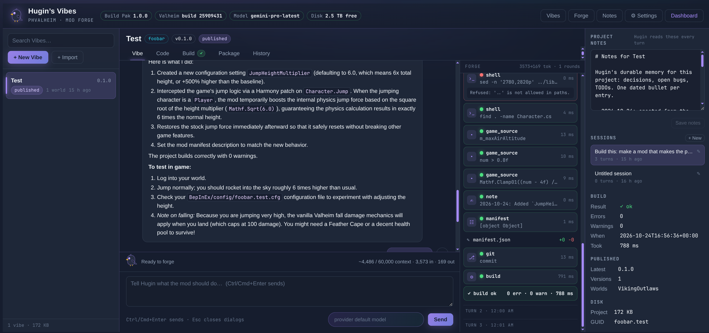
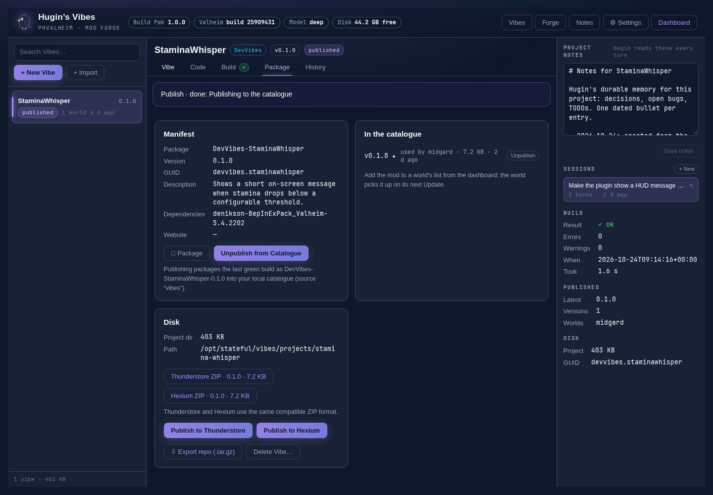
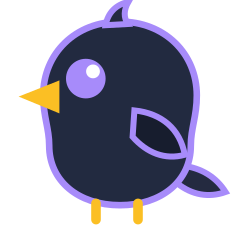

PHVALHEIM
PHVALHEIM2.59
Got a mod idea?
Tell it to
the raven.
A little stamina tweak.
A new rule for your world.

Meet Hugin's Vibes.
01 / Set up once
He brings
the workshop.
Connect an AI provider.
Install the optional Build Pak.
01
Compiler + .NETThe tools to build your mod
02
BepInEx + HarmonyThe references already connected
03
Your game librariesPrepared locally from your world
02 / Describe your idea
Small prompt.
New possibility.
Create a Vibe. Tell Hugin
what you want to change.

Your code. Your local Git history.
03 / Follow the work
Write. Build.
Work it out.
Watch the tool calls.
Read the compiler feedback.
Ask for fixes. Keep iterating.
04 / Package
Your mod.
Ready to try.
Plugin + manifest + README + icon.
One catalogue-compatible ZIP.

Game reference DLLs stay out.
05 / Publish locally
A catalogue.
All your own.
Publish to Hugin's Vibes.
Your worlds can now select it.
No hosted catalogue account needed.
06 / Test in game
Take it into
your world.
Use a modded test world first.
01Choose the mod
02Update the world
03Sync your client
04Join. Try. Tweak.
Your idea starts here
Let Hugin
cook.

Hugin's Vibes · PhValheim 2.59
Tools → Hugin's Vibes
The step-by-step guide:
brianmiller.github.io/
phvalheim-server
brianmiller.github.io/
phvalheim-server